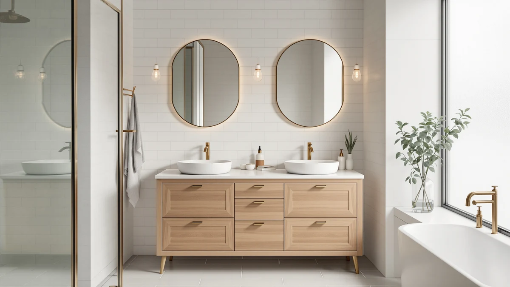

Pvillez 48" Double Sink Review (2026): Worth It?
Prices and picks verified as of October 2026. Independent, reader-supported reviews.


Quick Answer
In this pvillez 48" double sink review, the Pvillez vanity costs $758.00 and carries a 4.1-star rating across 40 verified reviews, the only option here with a public track record. It undercuts the DELUXE LIVING and Weibath alternatives on price while giving two people a full double-sink counter instead of a single 42 inch basin.
Our pick: Pvillez 48" Double Sink Bathroom for $758.00 Check Price on Amazon
Bottom line: our top pick is the Pvillez 48" Double Sink Bathroom Vanity Freestanding at $758.
Things to Know Before You Buy
- Price across the four vanities in this pvillez 48 inch double sink review spans $699.99 to $769.99, a gap of about $70.
- The Pvillez is the only listing here with a public rating: 4.1 stars across 40 verified reviews. The DELUXE LIVING, Weibath, and AMERLIFE alternatives are too new on Amazon to show a review count yet.
- Material is MDF and engineered wood across the board at this price point, which handles standing water differently than solid hardwood over several years.
- A double-sink 48 inch layout like the Pvillez suits two people sharing one bathroom. A single-user bathroom may do fine with the smaller 42 inch DELUXE LIVING instead.
- Every price below reflects the listing at the time of writing, so check the current Amazon price before you buy.
This pvillez 48" double sink review breaks down whether the vanity's $758.00 price and 4.1-star rating across 40 verified reviews hold up against three close-priced double-sink and single-sink alternatives. Most shoppers looking at a 48 inch footprint want to know whether a double basin is worth the extra width, and whether the Pvillez's construction matches vanities that cost more. We line the Pvillez up against the DELUXE LIVING, Weibath, and AMERLIFE options on price, material, and review history so you can see exactly what $700 to $770 buys right now. Listings at this price often look identical in photos, and the differences only show up once you compare the fine print on basin count, cabinet material, and how many buyers have actually reviewed the piece.
The short version: the Pvillez wins on track record, since it's the only one of the four with a public rating, and it does that while undercutting two of the three alternatives on price. It loses a little on width, since the AMERLIFE below stretches to a full 60 inches for less money. We break down where each option falls short in the sections that follow, so you can match the tradeoffs to what your bathroom actually needs instead of guessing from a product photo. None of this comparison relies on a manufacturer's marketing copy alone; every claim below traces back to either the listed specs or the verified reviews attached to that listing.
Why You Should Trust Us
Ilane Tall covers bathroom fixtures and furniture for Best Bathroom Vanities and put together this pvillez 48 inch double sink review by comparing the manufacturer's listed materials and dimensions against current Amazon pricing and verified buyer feedback. We do not run a fake testing lab or claim to have installed this vanity ourselves. Instead, we cross-check what Pvillez states on the listing against what its 40 verified reviewers report after living with the piece, and we say so plainly when a competing listing doesn't have enough review history to back a confident recommendation. That distinction matters more in the vanity category than most, since a listing's photos rarely show how a cabinet holds up after a year of daily splashes around two sinks instead of one.
Our Research Experience
This pvillez 48 inch double sink review doesn't involve physical testing. We compared the Pvillez 48 Inch Double Sink Bathroom vanity against three close-priced alternatives using the manufacturer's listed materials, dimensions, and construction details, then checked those claims against the vanity's 40 verified owner ratings. For the DELUXE LIVING, Weibath, and AMERLIFE alternatives, where Amazon hasn't yet collected a public review count, we relied on the listed features and current pricing alone, and we flag that gap in the sections below so you can weigh it accordingly. When a manufacturer's description and buyer feedback disagree, we note the disagreement instead of picking whichever version sounds better. That approach takes longer than repeating a spec sheet, but it's the only way to tell you anything you couldn't already read on the Amazon listing yourself.
Overview & Specs

Pvillez 48" Double Sink Bathroom
What we like
- Double-sink 48 inch counter gives two people separate wash areas instead of one shared basin
- The only vanity in this comparison with a public rating: 4.1 stars across 40 verified reviews
- Priced at $758.00, below the DELUXE LIVING and Weibath alternatives despite the wider double-sink surface
Flaws but not dealbreakers
- MDF and engineered wood construction needs prompt cleanup around both basins to avoid swelling over time
- A 4.1-star average leaves room for real complaints, and 40 reviews is a modest sample next to bigger vanity brands
- 48 inches of double-sink counter needs more wall space than the single-sink 42 inch DELUXE LIVING alternative
| Material | MDF / engineered wood |
| Size | — |
The Pvillez 48 Inch Double Sink Bathroom vanity anchors this pvillez 48 inch double sink review because it's the only option among the four compared here with a public track record. At $758.00, it costs less than the DELUXE LIVING and Weibath alternatives below while giving two people a full double-sink counter instead of a single basin. The cabinet uses an MDF and engineered wood build, the same construction found across every vanity in this price range, and the listing shows 4.1 stars across 40 verified reviews. That review count won't rival a decade-old vanity brand, but it's real feedback from buyers who installed the piece, rather than a manufacturer's product description. That gives the Pvillez a paper trail the other three vanities in this comparison simply don't have yet.
Where the Pvillez earns its keep is the layout math. A 48 inch double-sink vanity fits into roughly the same footprint as a single-sink 42 inch model plus a few extra inches, so most primary bathrooms built for two people can accommodate it without moving plumbing. The tradeoff is the same one every MDF vanity in this comparison shares: you need to wipe up standing water around either basin promptly, since engineered wood cores swell faster than solid hardwood when moisture sits on the surface for hours. If your household includes two people who share a morning routine, that double basin does more for daily friction than the spec sheet alone suggests, and the existing review history gives you more to go on than a brand-new listing would. Buyers replacing an old single-sink vanity should also confirm their plumbing rough-in can accommodate two drains before ordering, since converting from one basin to two sometimes calls for a plumber's visit.
What We Liked
Across this pvillez 48 inch double sink review, the biggest strength is the review history. A 4.1-star average across 40 verified buyers means real owners have lived with this vanity long enough to rate it, which none of the three alternatives can currently claim. The double-sink 48 inch counter also earns its price: at $758.00, it undercuts the DELUXE LIVING's single-sink 42 inch cabinet by more than $10 while adding a full second basin. For a shared bathroom, that combination of proven feedback and extra counter space is hard to match at this price tier. The listing photos also show a fully assembled cabinet rather than a flat-pack kit, which cuts out the mismatched pre-drilled holes that sometimes trip up DIY installs on cheaper vanities.
What Could Be Better
The gap between a 4.1-star average and a five-star ideal isn't nothing. Forty reviews surface enough complaints to know the vanity isn't flawless, even if the overall trend leans positive. MDF and engineered wood construction also asks for more day-to-day care than solid hardwood, particularly around two basins instead of one, since spilled water gets more chances to sit unnoticed. Buyers who want the widest possible counter should also note that this 48 inch double sink vanity is still narrower than the 60 inch AMERLIFE alternative covered below, so measure your wall space before assuming double-sink automatically means the biggest option. Shoppers who want photographic proof of how the finish ages over several years also won't find much of that in a review set this size, simply because forty reviews cover a shorter ownership window than an established vanity line would.
Who Is It For?
This pvillez 48 inch double sink review points toward one clear buyer: two people sharing a primary bathroom who want separate wash areas without renovating for a 60 inch footprint. It's a reasonable pick if you value a proven rating over an untested listing, since the Pvillez is the only vanity here with real review data behind it. It's a weaker fit if you're outfitting a single-user bathroom, where the smaller 42 inch DELUXE LIVING wastes less wall space, or if you'd rather wait for more review volume before committing to any of these four options. Renters planning to move within a year or two may also prefer a lower-commitment single-sink option rather than installing a fully assembled double-sink piece.
Alternatives to Consider
If the Pvillez doesn't fit your bathroom or your budget, these three alternatives from this pvillez 48 inch double sink review cover different priorities: a smaller single-sink footprint, a floating design, and the widest double-sink counter of the group.

Editor’s Pick
DELUXE LIVING 42 Inch Bathroom
A single-sink 42 inch cabinet for a smaller bathroom, priced about $12 above the Pvillez despite the narrower single basin.
$769.99
Check Price on Amazon
Best Value
Weibath Floating Bathroom Vanity with
A floating design that opens up floor space for cleaning underneath, priced under the Pvillez but without a public review count yet.
$712.49
Check Price on Amazon
Premium Choice
60" Double Sink Bathroom Vanity
The widest double-sink option here at 60 inches, and the cheapest of the four, for a bathroom with more wall space to spare.
$699.99
Check Price on AmazonHow much does a 48 inch double sink bathroom vanity cost?
Based on the four vanities in this pvillez 48 inch double sink review, expect to pay between $699.99 and $769.99 for a double-sink or single-sink model in this width range.
Is the Pvillez 48 inch double sink vanity worth it?
For a shared bathroom, yes.
Frequently Asked Questions
How much does a 48 inch double sink bathroom vanity cost?
Based on the four vanities in this pvillez 48 inch double sink review, expect to pay between $699.99 and $769.99 for a double-sink or single-sink model in this width range. The Pvillez sits in the middle of that range at $758.00.
Is the Pvillez 48 inch double sink vanity worth it?
For a shared bathroom, yes. It is the only vanity in this comparison with a public rating, 4.1 stars across 40 verified reviews, and it costs less than the DELUXE LIVING and Weibath alternatives while adding a second basin. If you only need a single sink, the smaller 42 inch DELUXE LIVING wastes less wall space.
Is MDF or engineered wood durable enough for a double-sink vanity?
It can be, as long as you wipe up standing water around both basins promptly. Engineered wood and MDF cores hold up fine under normal bathroom humidity but swell faster than solid wood if water sits on the surface for hours, and a double-sink layout gives water two basins worth of chances to sit unnoticed.
Final Verdict
This pvillez 48 inch double sink review comes down to one question: do you want proven feedback or the widest possible counter? The Pvillez 48 Inch Double Sink Bathroom is the pick for most shared bathrooms, since it pairs a 4.1-star rating across 40 verified reviews with a price below both the DELUXE LIVING and Weibath alternatives. If you need a single-user footprint or the widest 60 inch counter, the alternatives above cover those cases without straying far from the same price range. Every option here lands within about $70 of each other, so the deciding factor usually comes down to basin count and wall space rather than budget. Whichever vanity you choose, confirm the current price and stock before ordering, since Amazon listings in this category shift more often than the pages themselves get updated.